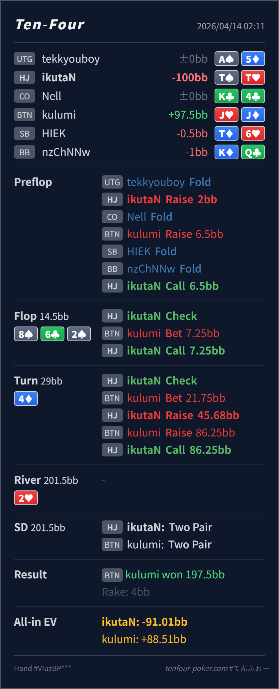

Preflop
良いT♠T♥ は HJ open-call range のかなり上位で、4bet mix はあっても call は十分自然です。
主論点は、HJ open-call 後の 3bet pot で 8♠ 6♣ 2♠ / 4♦ に対して T♠T♥ を turn の check-call bucket に置くか、check-raise stack-off まで押し上げるかです。結論は、preflop の continue と flop の call はかなり自然で、いちばん見直したいのは turn の raise です。T♠T♥ は overpair でしかも spade を 1 枚持つ強い continue ですが、3bet pot の大きい 2bar に対しては value raise より call 寄りで、さらに 3bet jam まで返された時点では defense の上側から外れやすいです。
T♠T♥J♥J♦8♠ 6♣ 2♠ / 4♦ / 2♥8♠ 6♣ 2♠ の flop で T♠T♥ は overpair + spade の強い continue です。ここは raise を急ぐより、相手の c-bet range を広く残したまま check-call に置く方が素直です。4♦ は HJ 側に set や一部 straight / two pair を足す一方、T♠T♥ 自体はまだ one-pair のままです。BTN の 75%pot 2bar に対しては、強い call bucket ではあっても raise-for-value の主役ではありません。86.25BB まで返された時点では、BTN 側は JJ+, set, 強い spade draw などにかなり寄ります。T♠ を持つぶん natural bluff を一部 block しているのも、call-off を苦しくしています。T♠T♥J♥J♦2BB, BTN 3bet 6.5BB, HJ call8♠ 6♣ 2♠ / 4♦ / 2♥7.25BB, HJ call21.75BB, HJ raise 45.68BB, BTN raise 86.25BB, HJ callTT < Villain JJ
良いT♠T♥ は HJ open-call range のかなり上位で、4bet mix はあっても call は十分自然です。
8♠ 6♣ 2♠良いT♠T♥ は overpair + spade でかなり強い check-call です。raise に回す必然はまだ薄いです。
4♦改善余地大T♠T♥ は依然として強い continue ですが、raise-for-value というより call で river 実現値を取りにいく hand です。
| 論点 | その場で起きがちな見え方 | どこがズレたか | 次回の基準 |
|---|---|---|---|
turn の TT の扱い | overpair で、しかも low board なので protection も兼ねて raise したくなる | 3bet pot の大きい turn barrel に対して raise が欲しいのは、set, straight, 強い draw などのより polar な部分です。T♠T♥ は強い continue ですが、worse hand から 3street 取り切る value raise には少し届きません。 | 3bet pot で one-pair を raise したくなったら、まず 何に call され、何を fold させたいか を先に分ける |
| raise 後の jam 対応 | ここまで入れたので pot odds 的に降りにくく感じる | IP の turn 3bet jam は匿名 pool でかなり value 寄りになりやすく、T♠ を持つ TT は spade bluff を一部 block してしまいます。raise を選んだとしても、jam に対してはかなり苦しいです。 | 自分の blocker が bluff を減らし、value をあまり減らさないときは、one-pair の stack-off をかなり慎重にする |
| ストリート | その時点の見え方 | 実ハンドの位置づけ | 評価 | その場の一手 |
|---|---|---|---|---|
| Preflop | BTN の 3bet range は JJ+, AQ+, suited broadway を中心にかなり強めです。 | T♠T♥ は HJ open-call range のかなり上位で、4bet mix はあっても call は十分自然です。 | 良い | ここは call で問題ありません。 |
Flop 8♠ 6♣ 2♠ | BTN の 1/2pot c-bet には overpair, A♠K♠/A♠Q♠, AK/AQ の一部、spade を含む semibluff が広く残ります。 | T♠T♥ は overpair + spade でかなり強い check-call です。raise に回す必然はまだ薄いです。 | 良い | check-call が素直です。 |
Turn 4♦ | HJ 側には set や一部 75s/54s が増えますが、BTN 側も JJ+ と強い draw をまだ厚く持っています。 | T♠T♥ は依然として強い continue ですが、raise-for-value というより call で river 実現値を取りにいく hand です。 | 改善余地大 | ここは check-call が本線です。raise は自分より強い range にぶつかりやすいです。 |
| River |
強い continue と stack-off 主体 は別です。worse hand に call されるか と bluff を残した方が得か を先に整理するとぶれにくいです。TT のような one-pair は、raise を減らすだけで大きな事故がかなり減ります。JJ/QQ や A♠Kx を thin に barrel しがちなタイプでも、T♠T♥ は raise より call に置いた方が bluff を残しやすく、実戦 EV が出やすいです。